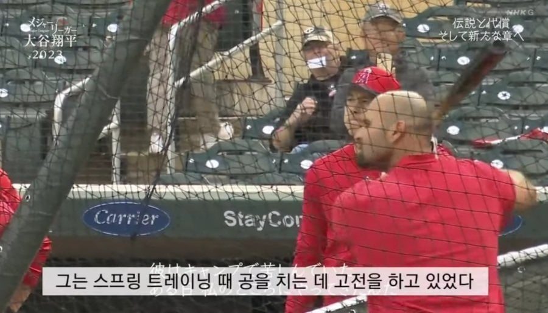
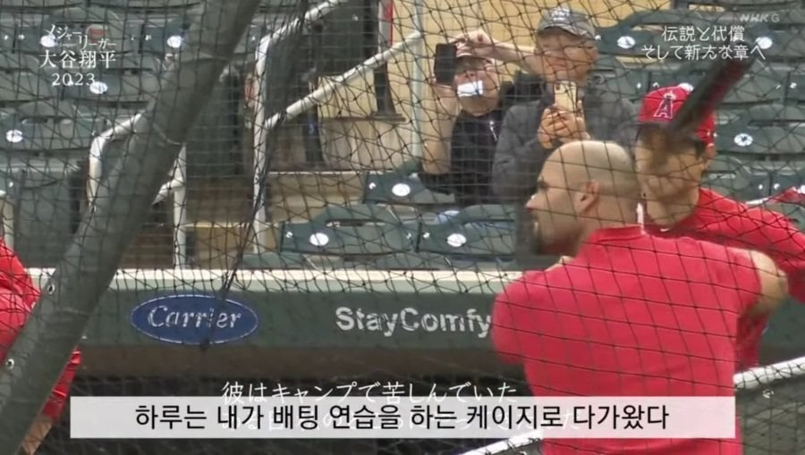
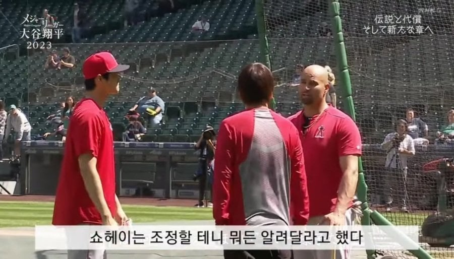
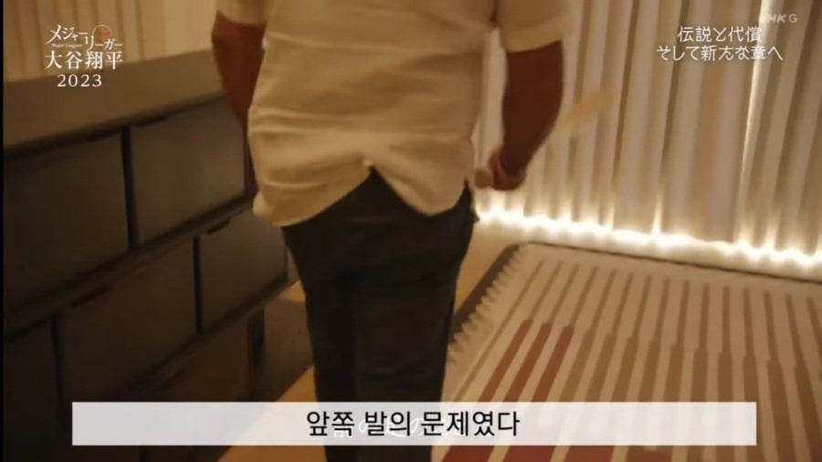
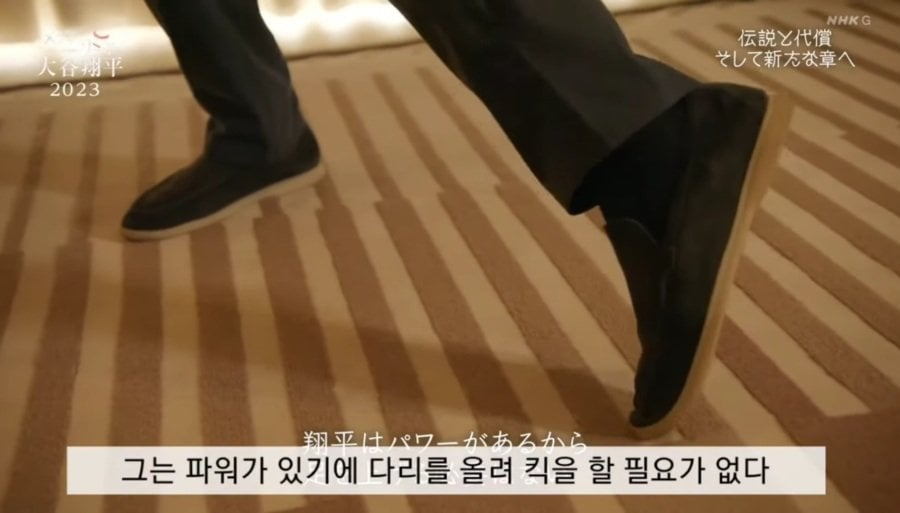
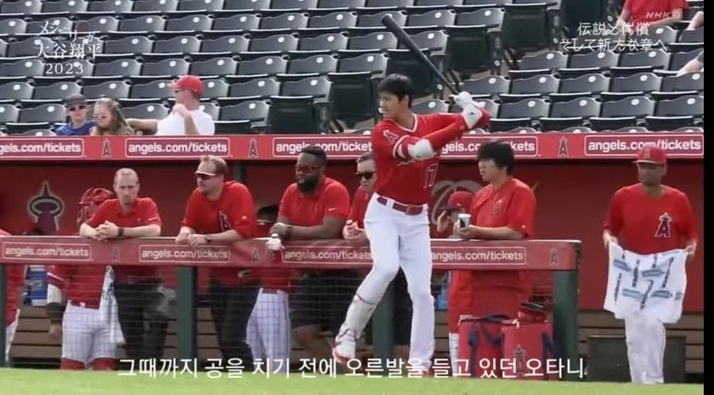
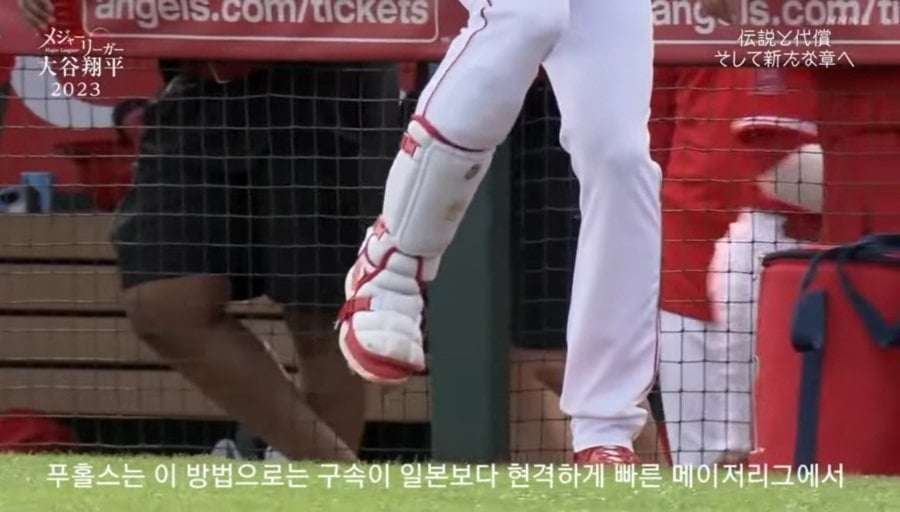
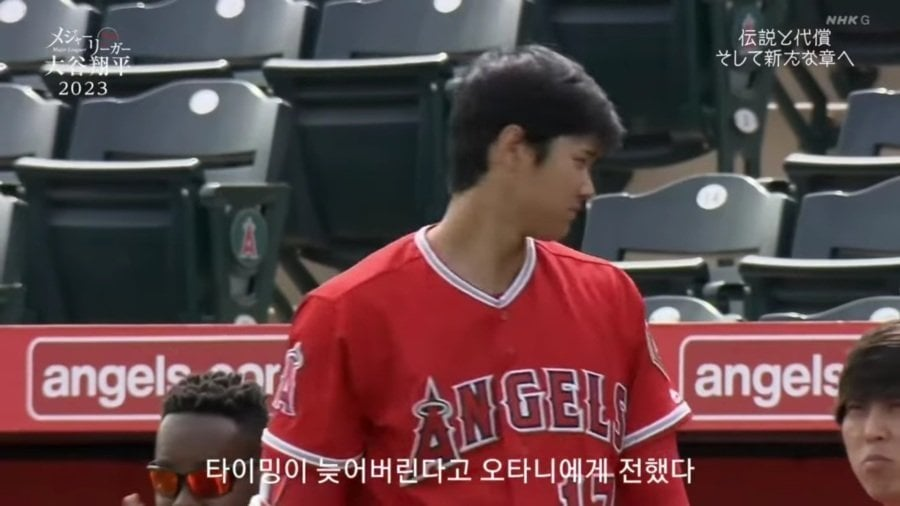
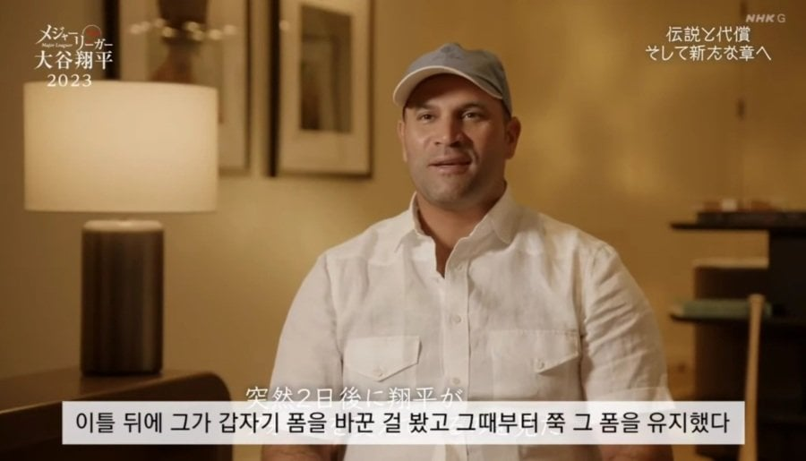
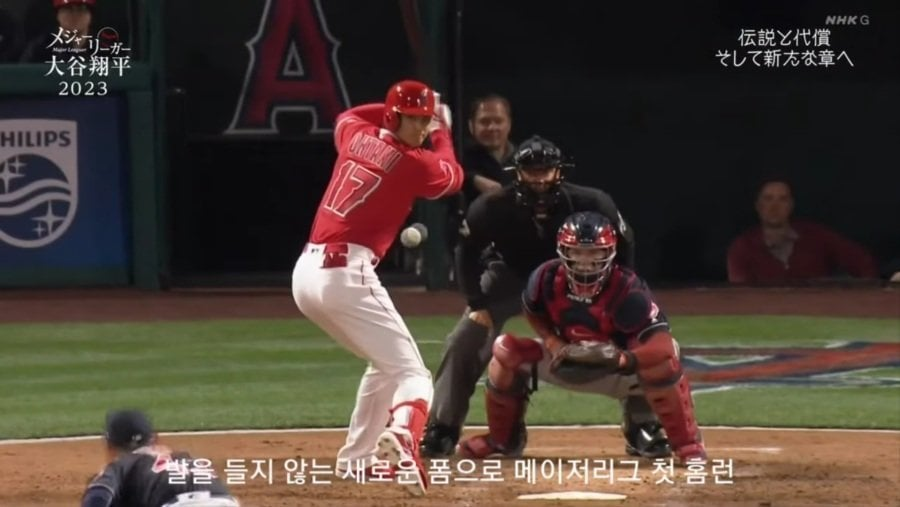
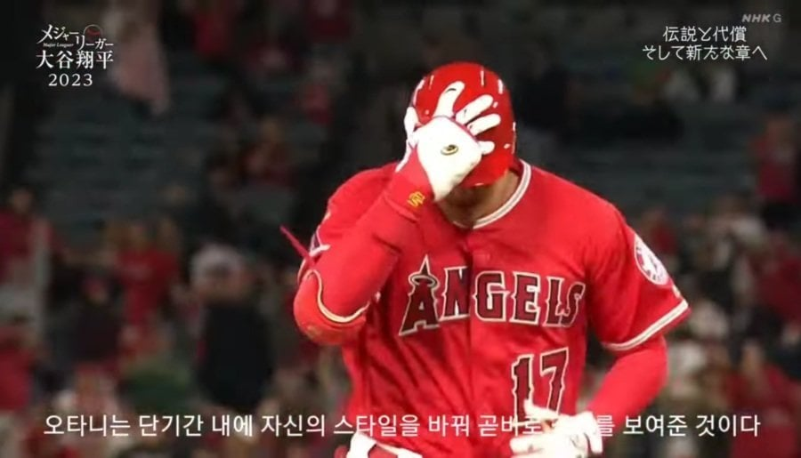
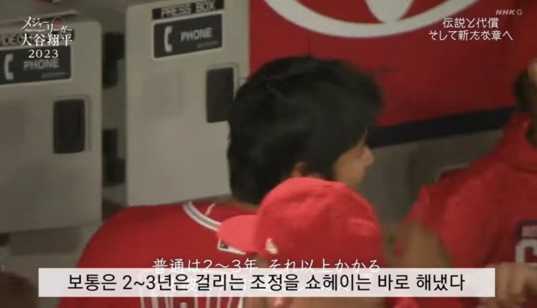
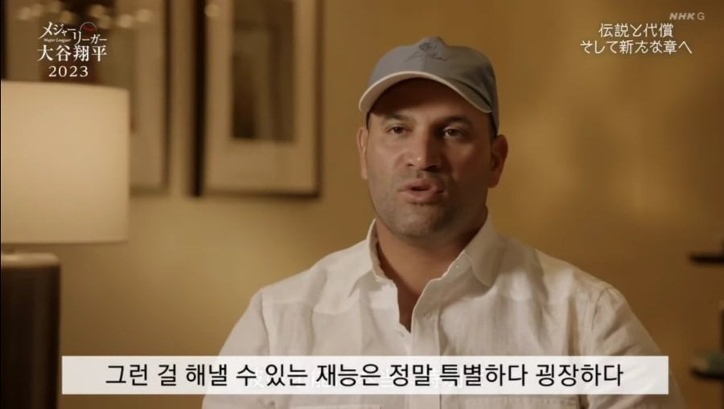
ㅇㅅㅈㅅㅅ













ㅇㅅㅈㅅㅅ
강정호도 투스트 이후엔 컨택 위해서 레그킥 버렸음
그게 알려주면 교정이 되는가였어? ㅋㅋㅋㅋ
근데 왜 지금은 못하냐고 다저스 타율 개박살났어
부상인데 뭐 어쩔 수 없지
다른 이유같으면 졸스신 어게인해서 조언 받죠
아프대
육아가 이렇게 무습습니다
육아도 육아겠지만 남편이 메져리그 간판스타인데 애키우는 유모는 고용하지않았으려나?
육아보다는 부상관리 잘 안된거라고 다들 하는거같더라.
육아중
사람 이름이 똥말ㄷㄷ
ㅇㅅㅈㅅㅅ
압도적인 소프트웨어 + 하드웨어 + 인성
맥스먼시 장전발 많이 올리는데 잘침
GOAT
ㅇㅅㅈㅅㅅ
훅가는 것도 푸홀스 따라하나?
ㅇㅅㅈㅅㅅ
ㅇㅅㅈㅅㅅ
Goat를 만드신 Goat
밀워키가 오늘도 발랐네 쓰리핏은 허공으로 날아가게 생겼네 ㅋㅋㅋㅋ
우리들의 영원한 리더
어떻게 사람 이름이 똥구멍 poo holes?

푸홀스 조언은 따라야지 ㅋㅋㅋ